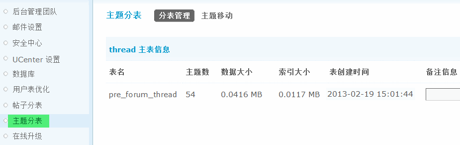
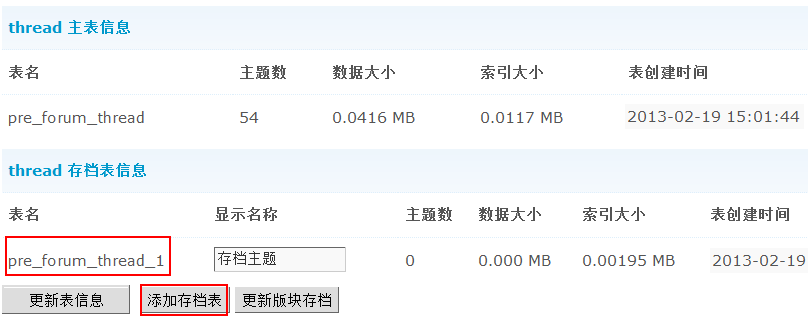
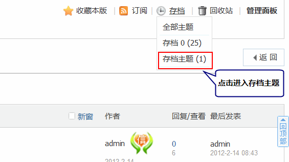
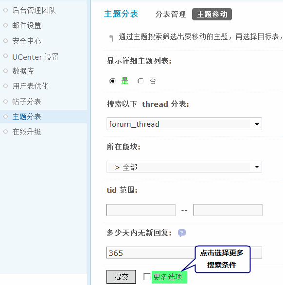
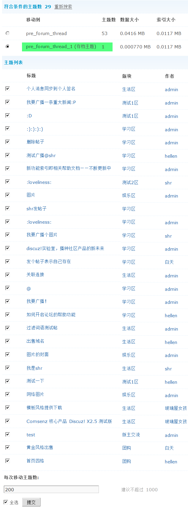

主题分表
主题分表功能可将 forum_thread 表（包含主题标题、创建时间等信息，但不包含主题及回复内容）分在多个数据表中，减轻单表的访问压力，提高网站运行效率，适合主题数很多并且运行效率受到影响的站点使用。
主题分表有两种类型：主表和存档表。
1、主题分表功能可将 forum_thread 表(包含主题标题、创建时间等信息，但不包含主题及回复内容)分在多个数据表中；
2、创建新的主题存档表后，可使用主题移动功能将特定主题移动到存档表中；
3、移动到存档表中的主题，会在主题所在的版块下建立一个存档区(名称可自定义)，通过存档区可浏览存档表中的主题；
4、存档表中的主题，只供浏览，不可回复、评分，不能进行管理操作，但可以删除和移动到非存档区。
首先，根据主题表大小，建立存档表，存档表以 pre_forum_thread_数字 自动命名，如下图所示，建立了一个存档表：
一、分表管理
主题分表中其中主表有且只有一个，用于存放新主题；存档表可有任意多个，其中的主题，只供浏览，不可回复、评分，不能进行管理操作，但可以删除和移动到非存档区。
第一次访问主题分表功能，会看到默认拥有一个主表，名称为pre_forum_thread，此表为安装 Discuz! 后的标准主题表。此主表信息不可删除，不可更改。
新添加的存档表会自动以“pre_forum_thread_数字”的方式进行命名，无需人工干预。
点击列表下方的“添加存档表”，便可以添加一个新的存档表。
创建新的主题存档表后，可使用主题移动功能将特定主题移动到存档表中。移动到存档表中的主题，会在主题所在的版块下建立一个存档区（名称可自定义），通过存档区可浏览存档表中的主题。修改该存档表在板块的显示名称后，点击列表下方的“更新表信息”来保存修改。
“更新版块存档”用于更新在主题存档表中的主题所在的所有版块的主题存档信息。例如有两个主题存档表，这两个表中的主题属于A、B、C三个版块，“更新版块存档”后，便会在这些版块出现存档区的显示提示；反之，如果某一个版块中没有主题存在于主题存档表中，则会通过“更新版块存档”来删除此板块出现的存档区。如下图所示：
点击每个主题分表后面的“删除”可以删除该分表，只有空表可以被删除。
二、主题移动
主题移动功能可将特定的主题在原始表（forum_thread）和新建的主题存档表之间移动。移动主题之前，请确定存在至少一个主题存档表（表名为 forum_thread_1、forum_thread_2……）。
主题移动涉及大量的数据转移，需要关闭论坛后使用。为防止数据库在移动过程中出现问题，请先进行数据备份。
移动主题需要两步：
1、根据提供的条件搜索出要移动的主题
“搜索 thread 分表”会列出主题表存在的所有分表，指定其中一个主题分表，在其中进行搜索。
点击“更多选项”会出现更多搜索条件。
2、选择搜索出的主题，然后选择目标分表，进行主题移动。
移动操作可能需要一段时间，请耐心等待。
移动之后，可以从分表管理的分表列表中查看到每个分表的主题数。
最后，需要给大家说明的是分表功能可以将主题、帖子分在不同的数据表中，适合帖子量很大并且运行效率受到影响的站点，我们建议您考虑对帖子和主题进行分表，把主题和帖子表这个存放大量主题帖子的表分成若干个表，大大减少数据库查询的时间，降低数据库“无谓”的消耗。